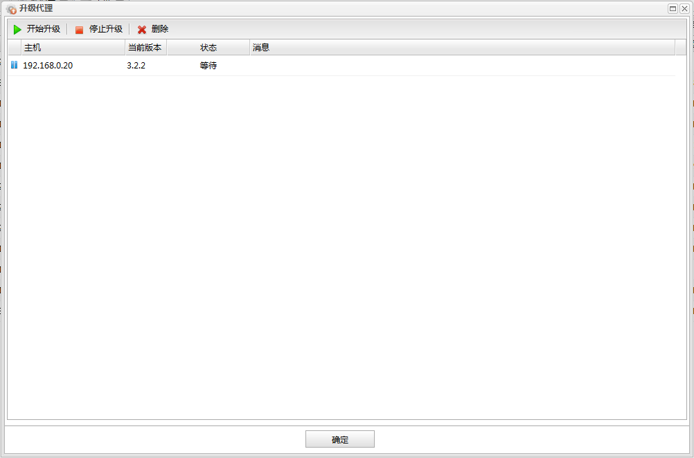

如果主机上的数据库代理版本过低可能会影响部分监控信息的收集。当发现有主机上的数据库代理需要升级时，可以在主机监控面板上点击升级代理按钮打开数据库代理升级对话框进行统一升级。如下图所示:

页面打开后表格中已自动添加了所有需要升级的数据库代理，点击升级按钮即可统一进行升级。
功能按钮列表
| 按钮 | 说明 |
|---|---|
| 开始升级 | 开始升级。 |
| 停止升级 | 停止升级，在升级过程中慎用，因为中途停止可能导致数据库代理无法继续使用。 |
| 删除 | 若不想对某些数据库代理进行升级，可以选中后点击删除按钮进行删除。删除后可以继续对其他保留的数据库代理进行升级。 |
代理升级列表
| 名称 | 说明 |
|---|---|
| 主机 | 数据库代理所在主机的ip地址或名称。 |
| 当前版本 | 数据库代理当前的版本。 |
| 状态 | 数据库代理升级状态。（等待、升级中、升级成功、升级失败） |
| 消息 | 数据库代理升级失败时返回的消息。 |